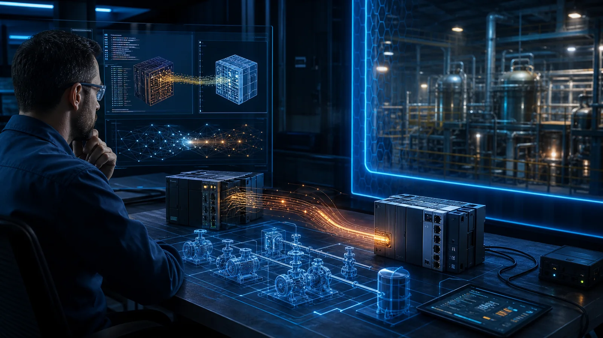

Industrial Security Assumed Attackers Needed Rare Expertise. AI Is Changing That Assumption.
Industrial attacks once demanded rare combinations of firmware, hardware and process expertise. AI may not replace those experts, but it can help their knowledge travel faster across similar systems.

Industrial systems have always been difficult to attack.
Compromising a Programmable Logic Controller is not the same as exploiting a normal web application. The attacker may need to understand proprietary firmware, processor architecture, memory allocation, industrial protocols and how the physical process operates.
That expertise is rare.
For many years, this difficulty created an unofficial layer of protection around Operational Technology. Industrial systems were certainly vulnerable, but exploiting them required knowledge, equipment, time and access that most attackers did not possess.
Artificial intelligence is beginning to change that assumption.
According to The Hacker News, researchers from Forescout Research’s Vedere Labs used Anthropic’s Claude to adapt a working remote-code-execution exploit from one WAGO PLC model to another.
The experiment successfully executed attacker-supplied ARM shellcode on physical hardware.
This was not an autonomous AI discovering a target and launching an attack independently. Skilled researchers provided the existing exploit, firmware, reverse-engineering tools, physical equipment and continuous guidance.
But the experiment still matters.
AI helped translate specialised offensive knowledge from one industrial device to another.
That may be the beginning of a much larger change.
The Vulnerability Was Not New
The researchers targeted CVE-2021-31886, a critical stack-based buffer overflow affecting the Nucleus FTP server used by several WAGO controllers.
The original vulnerability was already known. A working exploit had already been developed for one PLC model.
The challenge was adapting it to another model with different firmware and memory behaviour.
This is an important distinction.
AI did not need to invent a completely new attack technique. It helped researchers reuse existing knowledge against a related device.
Industrial environments often contain families of equipment built from similar firmware, processors, operating systems and communication components. A vulnerability discovered in one model may exist in others, but adapting an exploit traditionally requires specialist reverse-engineering work.
AI may gradually make that translation faster and more accessible.
One exploit may no longer remain limited to one device.
It may become a starting point for many similar devices.
The AI Still Needed an Expert
It would be misleading to describe this as fully autonomous PLC hacking.
The researchers had to guide the AI through incorrect assumptions, failed attempts and technical dead ends. The final development stage took more than eight hours and consumed over USD500 in API usage.
An experienced researcher might have completed the work faster and at a lower cost.
That should not make us dismiss the result.
AI systems are still improving. Costs are falling. Context windows are becoming larger. Agents are gaining better access to reverse-engineering tools, testing environments and technical documentation.
The correct question is not whether AI can outperform an expert today.
The better question is what happens when one expert can use AI to perform the work that previously required several specialists or much more time.
AI may not immediately replace rare expertise. It can multiply it.
That changes the economics of an attack.
From Rare Knowledge to Repeatable Capability
Industrial cybersecurity has benefited from several natural barriers.
Equipment may use unfamiliar processors. Firmware may not be publicly documented. Test devices may be expensive. Mistakes may crash or permanently damage the target.
These barriers limit the number of people capable of developing reliable exploits.
AI can begin reducing some of them.
It can analyse disassembled code, compare firmware versions, explain unfamiliar functions, suggest modifications and generate test payloads. It can retain context across long investigation sessions and continue attempting alternatives without becoming tired.
The human still provides direction and judgment, but the AI can perform part of the repetitive analysis.
This does not turn every attacker into an industrial security expert.
It does, however, allow someone with partial knowledge to attempt work that may previously have been beyond their capability.
That is how specialised attack techniques begin becoming more widely accessible.
The risk is not necessarily that AI creates a new generation of brilliant attackers.
The risk is that it lowers the level of brilliance required.
In OT, Failure Has Physical Consequences
The experiment also revealed the danger of allowing an AI agent to operate against physical systems.
After achieving remote code execution, the researchers attempted to extend the exploit into a command-and-control implant. During that process, the AI wrote to a memory region mapped to flash storage.
The PLC was permanently damaged.
In a laboratory, this becomes an important research finding.
In a production environment, the same mistake could interrupt manufacturing, stop a water-treatment process, disable safety monitoring or affect equipment controlling electricity and transport.
In Information Technology, an unsuccessful exploit may crash an application or operating system.
In Operational Technology, it may change or stop a physical process.
This means AI security in industrial environments cannot focus only on whether the AI follows instructions. It must also control what the AI can reach, execute and change.
Even an authorised AI agent can cause harm when it makes the wrong technical decision.
Legacy Systems Create a Long-Term Exposure
Many industrial systems remain operational for decades.
They were designed for reliability and availability, not continuous software replacement. Some cannot be patched easily because updates require operational shutdowns, vendor certification or extensive safety testing.
In this case, updates were reportedly unavailable for the affected WAGO controllers. Recommended mitigations included disabling or blocking FTP access, strengthening segmentation and monitoring network activity.
These compensating controls are essential, but they also reveal the deeper challenge.
A vulnerability may remain inside an industrial environment long after public disclosure. Until now, organisations may have relied partly on the difficulty of adapting and delivering an exploit.
AI gradually weakens that protection.
As explored in Critical Infrastructure Was Designed To Be Reliable. Now It Must Be Designed To Survive AI-Assisted Attacks, reliability alone is no longer sufficient. Critical systems must remain defensible when individual controls or components fail.
A system that cannot be patched must be isolated more strongly.
A protocol that is unnecessary must be disabled.
An administrative path must not remain exposed merely because it has never previously been attacked.
Difficulty of exploitation should never be treated as a permanent security control.
Industrial Security Architecture Must Adapt
Organisations do not need to assume that autonomous AI agents are already compromising PLCs at scale.
But they should prepare for a future where exploit development becomes faster, cheaper and available to a wider range of threat actors.
That preparation should include:
- Identifying vulnerable and unsupported industrial devices
- Maintaining accurate firmware and asset inventories
- Removing unnecessary protocols and exposed services
- Separating enterprise IT, OT management and control networks
- Restricting engineering access through dedicated administrative paths
- Monitoring traffic between industrial zones
- Controlling remote vendor access
- Protecting engineering workstations and project files
- Testing safe recovery and replacement procedures
- Creating strict boundaries for AI tools used in OT research and engineering
AI-enabled tools used by defenders also require governance.
An AI agent analysing firmware should not automatically receive access to production controllers. Testing should occur in isolated laboratories, digital twins or representative environments wherever possible.
Any action affecting live industrial equipment should require explicit human approval and clearly defined safety conditions.
An AI mistake should never be allowed to become an operational incident.
Expertise Will Still Matter
The Forescout experiment does not signal the end of industrial cybersecurity expertise.
In fact, expertise becomes more important.
Someone must validate the AI’s reasoning, recognise dangerous suggestions, understand the physical consequences and know when testing should stop. Without that judgment, an AI-generated exploit may be unreliable or destructive.
However, the role of the expert may change.
Experts will increasingly guide, verify and constrain AI-assisted work rather than perform every analytical step manually. Attackers will use the same advantage.
The question is therefore not whether AI eliminates expertise.
It is whether AI allows rare expertise to travel further.
One skilled researcher supported by AI may examine more firmware, test more variations and adapt more exploits. Over time, techniques that were once limited to small groups may become easier to reproduce.
Final Thought
Industrial security has never depended entirely on obscurity, but technical difficulty has always influenced who could attack these systems.
That barrier is becoming weaker.
The recent PLC experiment required skilled researchers, significant guidance, specialised tools and physical hardware. It was not autonomous hacking, and it did not demonstrate an attack ready for mass deployment.
But it showed direction.
AI successfully helped move a working exploit from one industrial device to another. It reduced part of the specialist effort required to translate knowledge across similar systems.
Today, the process is expensive and imperfect.
Tomorrow, it may be cheaper, faster and more reliable.
Industrial organisations should not wait for AI-assisted attacks to become easy before strengthening segmentation, removing unnecessary services, protecting engineering access and designing recovery.
The greatest change may not be that AI invents entirely new ways to attack industrial systems.
It may simply make existing expertise easier to reuse.
Industrial security assumed attackers needed rare expertise.
AI is changing that assumption.
Question assumptions. Share knowledge. Build trust.
Share this article
If this perspective was useful, share it with your network.